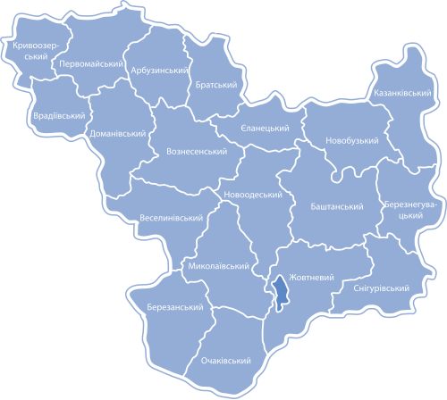

Ми раді вас бачити на нашому сайті :)
На сторінці сайту біженці та ВПО можуть знайти як отримати допомогу на території Миколаївської області: знайти житло, отримати гуманітарну допомогу та влаштуватись на роботу.
